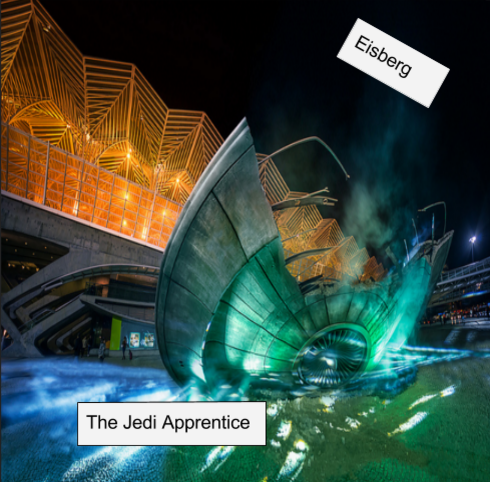

Design a band Challenge
Band Members:LIL TIM,BULLDOG,La Maquina,Pancho. Story:It all started when these four people called LIL TIM,BULLDOG,la maquina and Pancho met in the school of Alpha Cindy Avitia on a rainy day, the date was march 18 year 2018 and decided to make a band because they could all play a certain instrument.La maquina was the drummer,Both BULLDOG and Pancho were the guitarist and bass player and LIL TIM was the singer/rapper.They played rock and pop but sometimes LIL TIM would go solo and rap.The story of how they got the gig was strange it was when they were rehersing in BULLDOGS garage and a music producer was driving by and heard the music.He knock on the garage door and when they opened he offered them a chance to create an album.They automatically take it and they performed very well.The man who gave them the gig was impressed and told them that they would get a chance to perform in a bigger place and receive more money,they insatntly agreed and they performed amazingly.This made the manager ask the band if they wanted to sign a contract and they without thought signed it after 2-3 months one of their songs wen’t gold this made their band rise in fame they started to make more music and one of their songs went platinum.After being number 1 on the billboard of bands they decided that they needed to be more innovative with thir songs.This led to them being the number 1 band in the world.After 19 years off making the best music in the world they decided that it was time for them to retire but before they had one more gig at there hometown San Jose.They told the crowd that this was their last concert and they recieved a great applause when they wen’t off the stage.After this they parted ways and lived their lives with no worries.